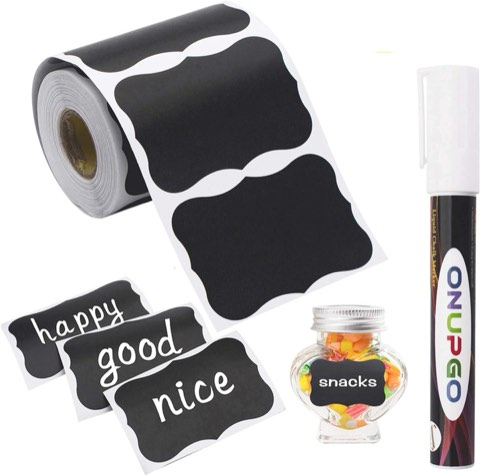
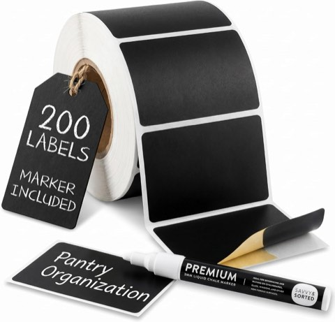
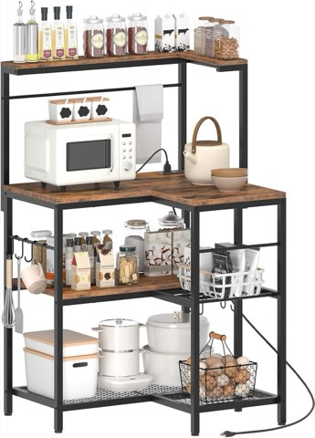
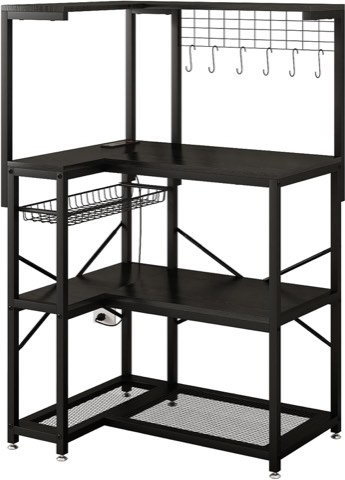
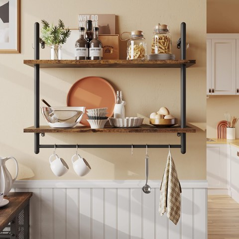
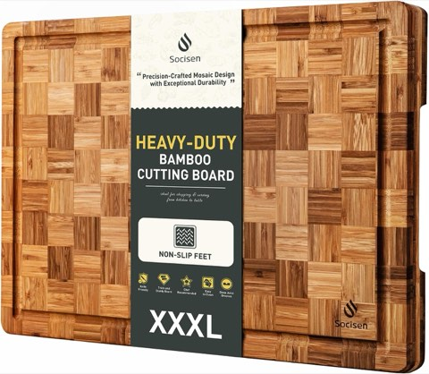

Where you put a coffee station matters more than how you style it.
A good spot gets used every single morning without fail. A bad one turns into a shelf nobody touches again after the first week.
It's worth working through placement and daily workflow before picking a style from the list further down. That's the part that actually decides whether a coffee station earns its spot in the kitchen long-term.


20 Bar Compact Espresso Machine with Milk Frother for Home
Shop on AmazonChoosing the Right Spot First
Being near an outlet is non-negotiable. An extension cord running across a counter defeats the whole point of a dedicated station.
Staying close to the sink turns rinsing the carafe or filling the kettle into a non-event, instead of a small trip across the kitchen every time.
A little visual separation from the main cooking zone keeps coffee clutter from mixing into dinner prep chaos later in the day.
An awkward, underused corner is often the best fit of all. It puts dead space to work instead of competing for prime counter real estate.


JayRex 3-Tier Kitchen Countertop Corner Shelf, Rustic Brown
Shop on AmazonGolener Adjustable Stackable Countertop Shelf
Shop on AmazonWhat Actually Makes One Get Used
A coffee station that photographs well but adds five extra steps to the morning routine won't last past week one.
The machine, the mugs, and the daily essentials all need to live within arm's reach of each other.
A tiered stand or small tray keeps syrups, sweeteners, and filters from spreading out across the counter on their own.
The real goal is a setup that's faster to use than making coffee anywhere else in the kitchen, not just a better-looking one.

Why a Dedicated Spot Matters at All
A coffee station isn't just decor. It clears the main counters of daily clutter and gives coffee-making its own defined zone.
That matters even more in a shared kitchen, where counter space gets fought over every single morning.
A dedicated spot also means the supplies stay in one place instead of scattered across three separate cabinets.
The visual upgrade is a nice side effect of all this, but the daily function is really what makes it worth setting up in the first place.


15 Coffee Station Styles to Build Once Placement Is Settled
1. Make It Personal
A hand-labeled jar, a mug collected from a specific trip, or a small handwritten sign makes a station feel specific rather than generic.
This direction layers on top of almost any other style on this list, rather than replacing it outright.
A few genuinely meaningful objects do more for the space than a full matching set ever could. It's often the one detail that makes a coffee station feel like it actually belongs to someone.


ONUPGO Waterproof Reusable Chalkboard Labels, 180 Piece, with Liquid Chalk
Shop on Amazon
Reusable Chalkboard Labels for Food Containers, 200 Piece, with Chalk Marker
Shop on Amazon2. Build In an Easy Seasonal Refresh
Swapping out a tray, a mug, or one small seasonal accent keeps a station feeling current without redoing the whole setup.
Keeping the base layer, the machine, the shelf, the main storage, constant, and rotating just the small accents, makes seasonal updates genuinely fast.
This suits anyone who wants a bit of variety without a full redecorate every few months. It's one of the lowest-effort ways to keep a well-used spot feeling fresh.

3. Fake the Luxury Look on a Real Budget
A few higher-end-looking touches, a brass tray, a quality canister set, one genuinely nice mug, can carry the whole station's perceived value.
The trick is spending on the two or three pieces that actually get noticed, rather than everything at once.
Repeating one metal finish across several objects reads as considered rather than random. This direction is really about where the budget goes, more than how much of it gets spent overall.

4. Build In Hidden, Integrated Storage
A dedicated cabinet or built-in nook keeps the entire coffee station tucked behind closed doors whenever it's not in use.
This suits a kitchen where the counters need to stay completely clear for most of the day.
It takes more planning than any other option on this list, since it usually means a small renovation rather than a simple add-on. Once it's in place, though, it functions almost like its own tiny room inside the kitchen.

5. Keep It Neutral for the Long Run
Soft whites, warm beiges, and light wood tones keep a coffee station from feeling trendy or dated in just a couple of years.
This suits a kitchen that's already neutral throughout, which keeps the whole space feeling cohesive.
Texture carries most of the visual interest here, since the color palette stays deliberately restrained. It's a safe, low-risk choice for anyone who'd rather not redecorate the station very often.

6. Put the Mugs on Open Display
Open shelving or hooks for mugs turns a collection into part of the decor instead of hiding it away in a cabinet.
It also turns grabbing a mug into a one-step process in the morning, rather than a cabinet search before the coffee's even started.
This works best with a mug collection that's already cohesive in color or style, though a mismatched one can work too, as long as it's grouped together intentionally.

7. Anchor It With One Piece of Wall Art
A single piece of coffee-themed art, or a metal sign above the station, gives the whole setup a clear focal point.
This works especially well when the station itself stays fairly simple below the art.
It signals the space's purpose at a glance, even from across the kitchen. One well-chosen piece does more here than a cluttered gallery wall ever would.

8. Tuck It Into an Awkward Corner
An underused kitchen corner is often the best spot for a coffee station precisely because nothing else wants it.
A small corner shelf unit or an L-shaped cart makes use of space that would otherwise sit empty all day.
This also keeps the coffee setup out of the main workflow path during actual meal prep. It's a practical solution before it's ever a styling choice.


HOOBRO L-Shaped Bakers Rack with Power Outlet, 4-Tier Corner Coffee Station
Shop on Amazon
4-Tier L-Shaped Baker's Rack with Power Outlet, Corner Coffee Bar, Black
Shop on Amazon9. Layer In Boho Texture
Woven baskets, a textured runner, and a mix of natural materials bring real warmth and a lived-in feel to a coffee station.
This suits a kitchen that already has some boho or eclectic styling going on elsewhere.
Layering is the main technique here, the same way it works in boho spaces throughout the rest of a home. It tends to feel less precious than other directions, which suits a station that gets used daily.

10. Go Sharp With Black and White
A sharp black-and-white palette gives a coffee station a clean, graphic look almost immediately.
Black hardware or a black machine against white surfaces creates instant contrast without needing much else added.
This suits a modern kitchen that already leans toward a monochrome palette. It's a lower-maintenance look to keep looking sharp, though, since any mess shows up fast against that contrast.

11. Put It on a Cart That Actually Moves
A rolling cart turns the entire coffee station into something that can relocate whenever it's needed elsewhere.
It tucks away for guests, rolls out for a party, or shifts over to a sunnier corner on a whim.
This suits anyone renting, or anyone who just doesn't want to commit to one permanent spot. It's one of the most flexible options on this entire list.

12. Mount a Floating Shelf for a Small Kitchen
A single floating shelf adds a coffee station to a kitchen that doesn't have room for a dedicated cart or cabinet.
It mounts above the counter without eating into any usable floor or counter space below it.
This is often the only realistic option in a small apartment kitchen. Keeping it to a handful of items prevents a narrow shelf from feeling crowded.


Bestier 31 Inch Industrial Pipe Wall Shelf with Towel Bar, Rustic Brown
Shop on Amazon13. Go Vintage-Inspired
A reclaimed cart, an antique tray, or a mismatched set of vintage mugs brings real character to a coffee station.
This suits a kitchen that already has some older or secondhand pieces mixed into it.
Thrift and estate sales are consistently the best source for pieces with this kind of history. It's one of the more budget-friendly directions on this whole list, since nothing here needs to be bought new.
14. Keep It Minimalist
A minimalist setup keeps only the essentials visible: the machine, a small canister, maybe two mugs out on display.
This works well for anyone who wants the station functional without letting it visually dominate the kitchen.
Closed storage handles everything that isn't used daily, keeping the counter itself nearly empty. Calm is the goal here, not cold, a few considered pieces rather than nothing at all.

31 oz Airtight Glass Coffee Canister with Scoop
Shop on AmazonKOSKIMER Glass Coffee and Sugar Container Set with Wooden Lids
Shop on Amazon15. Lean Into Rustic Wood
Warm wood tones, a butcher block surface, open wood shelving, woven baskets, bring a cozy, cabin-like feel to the whole setup.
This suits a kitchen that already leans farmhouse or traditional in its styling.
Wood also ages well, picking up character over years of daily use rather than looking worn out. It's one of the more forgiving materials for a spot that gets used first thing every single morning.


XXX Large Bamboo Cutting Board with Non-Slip Feet and Over-Sink Butcher Block
Shop on AmazonFunction First, Style Second
Placement and daily workflow decide whether a coffee station actually gets used, long after the first week of excitement wears off.
Pick the spot first, near an outlet, near water, out of the main cooking path, then layer one of these fifteen styles on top of it.
A station that sits two extra steps too far from the mugs or the sink rarely survives past the first month. Function first, style second, and the rest tends to fall into place on its own.